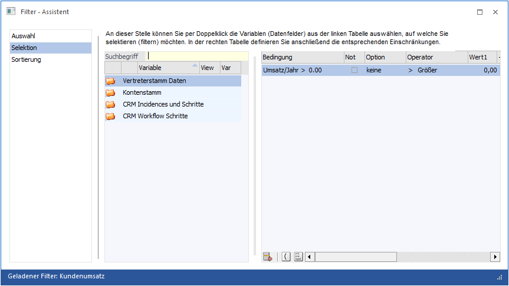
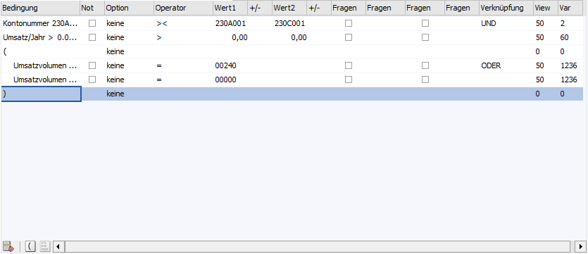
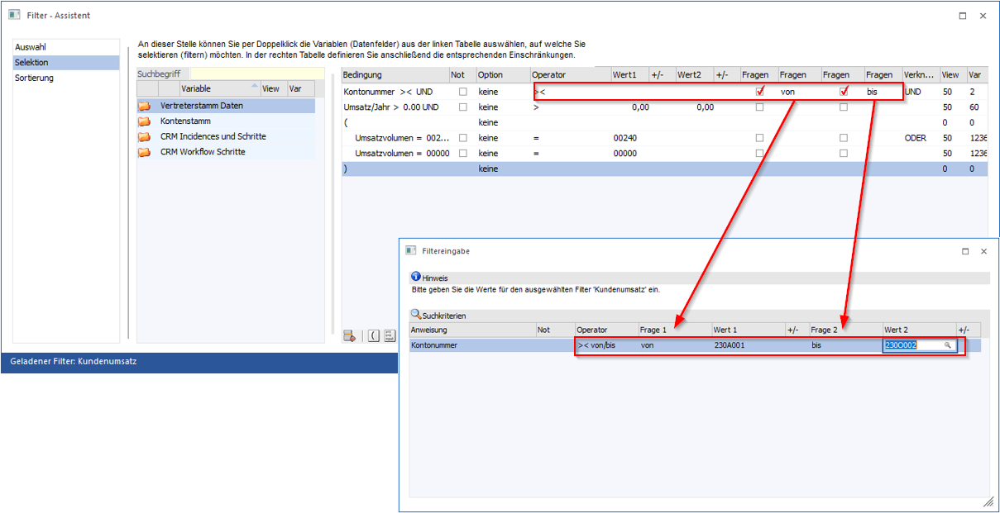
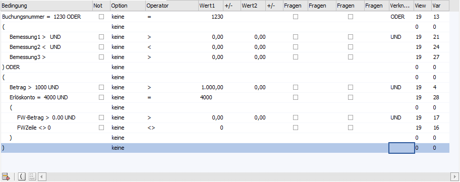
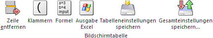

Im zweiten Bereich des Assistenten können die Selektionskriterien angegeben werden, anhand derer die entsprechenden Datensätze herausgefiltert werden sollen. Die Anzahl der Bedingungen ist mit 100 pro Ebene (Klammerung) begrenzt.

Im mittleren Bereich des Fensters werden die zur Verfügung gestellten Variablen angezeigt, im rechten Teil jene Variablen, nach denen selektiert werden soll.
Variablen
In der linken Tabelle im mittleren Bereich werden alle Datentabellen, Datenbereiche und Variablen angezeigt, die bei der Auswahl verwendet werden können. Die Übernahme / Zuweisung der Variablen kann per Doppelklick bzw. mit Drag & Drop (in die rechte Tabelle) erfolgen.
Innerhalb der linken Tabelle werden die Datentabellen mit ihren Bereichen und Variablen hierarchisch dargestellt, wobei zuerst immer die Datentabellen (1. Ebene) und die Datenbereiche (2. Ebene) der verfügbaren Variablen angezeigt werden.
ü 1. Ebene - Datentabellen
In der
ersten Ebene werden die Datentabellen dargestellt, welche in dem Filter
verwendet werden können.
ü 2. Ebene - Datenbereiche
Durch
einen Doppelklick auf das Symbol  in der ersten Spalte wird die darunter
liegende Ebene der Datenbereiche angezeigt. Z.B. ist die Tabelle "Kontenstamm"
u.a. in die Bereiche "Allgemein", "Adresse", "Kontenstamm FIBU" und "Kontenstamm
FAKT" untergliedert.
in der ersten Spalte wird die darunter
liegende Ebene der Datenbereiche angezeigt. Z.B. ist die Tabelle "Kontenstamm"
u.a. in die Bereiche "Allgemein", "Adresse", "Kontenstamm FIBU" und "Kontenstamm
FAKT" untergliedert.
ü 3. Ebene - Variablen
In der
dritten Ebene werden dann die verfügbaren Variablen angezeigt, die in dem Filter
verwendet werden können.
Ø Suchbegriff
Neben der manuellen Auswahl kann mit Hilfe des Suchbegriffs schnell und einfach nach den gewünschten Variablen gesucht werden. Hierfür wird der Begriff eingegeben und bestätigt, wodurch nur mehr jene Tabellen / Bereiche / Variablen angezeigt werden, welche dem gesuchten Suchbegriff entsprechen.
Beispiel
Es wird nach "post" gesucht.

Variablen für die Selektion

In der rechten Tabelle werden alle Selektionskriterien gespeichert. Dabei können folgende Spalten bzw. Felder bearbeitet werden:
Ø Bedingung
In diesem Feld wird die komplette Bedingung (das Endergebnis aller Eingaben der aktuellen Zeile) angezeigt.
Ø Not
Ist diese Checkbox aktiv, dann wird die Bedingung verneint. D.h. es werden nur Datensätze ausgegeben, welche außerhalb des selektierten Bereichs liegen.
Ø Option
Es stehen die folgenden sechs Optionen für die Filterzeilenselektion zur Verfügung:
ü 0 - keine
Es wird keine
spezielle Option für die Filterselektion verwendet.
ü 1 - aktueller Wert
Durch
Aktivierung der Option "Aktueller Wert" werden die zuletzt genutzten bzw.
aufgerufenen Objekte oder die eigenen Zuordnungen automatisch an den Filter
übergeben. Diese Option steht in der Regel für folgende Objekte zur
Verfügung:
ü Datum
Übergabe des aktuellen
Tagesdatums bzw. eines Bestandteils davon. Hier gilt das Einlog- und nicht das
Systemdatum.
ü Kontonummer, Artikelnummer,
Arbeitnehmer- bzw. Mitarbeiternummer, Projektnummer, Inventarnummer
(ANBU)/Anlagenbuchnummer(CRM)
Übergabe des zuletzt genutzten bzw.
aufgerufenen Objektes.
ü Benutzernummer,
Projektverantwortlicher
Übergabe des eingeloggten Benutzers.
ü Benutzergruppe
Übergabe der
Benutzergruppe des eingeloggten Benutzers.
ü Vertreternummer
Übergabe der
eigenen Vertreternummer (Zuordnung erfolgt in der Benutzeranlage).
Ergänzend kann diese Option bei einer WinLine LIST-Liste des Typs "CRM" bei den folgenden Feldern aktiviert werden:
ü T170/C009 - Kundenkonto
ü T170/C011 - Händlerkonto
ü T170/C012 - Arbeitnehmernummer aus dem WEB-Benutzer
ü T170/C021 - Delegiert an Benutzer => WEB-Benutzer des Benutzers
Hinweis
Für die Option "Aktueller Wert" stehen die folgenden Operatoren zur Verfügung:
|
Operator |
Bezeichnung |
Bedeutung |
|
<> |
Von / bis |
Dieser Operator steht nur bei Datumsfelder zur Verfügung und schränkt die Daten mit einer Unter- und Obergrenze ein. Die weitere Definition erfolgt über die Einstellung der Felder "Wert1" und "Wert2", in welchen per Auswahlbox folgende Selektionen zur Verfügung stehen:
ü 00 - Heute
ü 01 - Aktueller
Monat
ü 09 - aktuelles
Jahr
ü 02 - eine
Woche
ü 03 - zwei
Wochen
ü 04 - Monat, jedes
Jahr
ü 05 - 1.Quartal bis 08 - 4.
Quartal
ü 10 - Morgen
ü 11 - Heute +/-
ü 12 - Aktuelle Woche
+/-
ü 13 - Aktueller Monat
+/-
ü 14 - Aktuelles Jahr
+/- |
|
= |
Gleich |
Variablen, deren Wert mit der Bedingung genau übereinstimmt |
|
> |
Größer |
Variablen, deren Wert größer ist als jener in der Bedingung |
|
< |
Kleiner |
Variablen, deren Wert kleiner ist als jener in der Bedingung |
|
>= |
Größer Gleich |
Variablen, deren Wert größer ist als jener in der Bedingung oder mindestens gleich |
|
<= |
Kleiner Gleich |
Variablen, deren Wert kleiner ist als jener in der Bedingung oder höchstens gleich |
ü 2 - Vergleich mit
Folgezeile
Ist diese Option gesetzt, wird die selektierte Variable mit der
Variable der nächsten Zeile im Filter verglichen. Bei der Variablen der
Folgezeile wird unter "Option" ein Leerstrich "-" angezeigt. Die Verknüpfung der
beiden Variablen wird zudem in der Spalte "Bedingung" angezeigt.
Neben dem
Operator kann lediglich noch die Verknüpfung für "UND"/"ODER" selektiert werden.
Bei der zweiten Variable, also mit der Option "Vergleich mit Vorzeile", können
keine zusätzlichen Einstellungen vorgenommen werden.
Wird eine Variable mit
der Option "Vergleich mit Folgezeile" entfernt, wird auch die Variable
"Vergleich mit Vorzeile" automatisch entfernt. Das gleiche Löschverhalten
erfolgt, wenn die Option "Vergleich mit Folgezeile" auf eine andere Option
umgesetzt wird.
Wird der Filter gespeichert und es wurde keine Variable für
"Vergleich mit Vorzeile" erfasst, so wird eine entsprechende Meldung ausgegeben
(bei Filternutzung wird die Bedingung in diesem Fall nicht angewendet).
Hinweis
Bei Nutzung dieser Option stehen folgen Operatoren zur Verfügung:
|
Operator |
Bezeichnung |
|
= |
Gleich |
|
<> |
Ungleich |
|
> |
Größer |
|
< |
Kleiner |
|
>= |
Größer Gleich |
|
<= |
Kleiner Gleich |
ü 3 - Uhrzeit
Diese Option steht
nur bei Datumsfeldern zur Verfügung. Die Eingabe der Uhrzeit erfolgt im Format
HH:MM.
Hinweis
Die zur Verfügung stehenden Operatoren gleichen jenen der Option "2 - Vergleich mit Folgezeile".
ü 4 - Jubiläumsdatum
Diese Option
ignoriert beim Filtern das Jahr des Datum-Feldes, sodass nur Tag und Monat
geprüft werden.
Hinweis
Die zur Verfügung stehenden Operatoren gleichen jenen der Option "1 - aktueller Wert".
ü 5 - Jubiläumsdatum - aktueller
Wert
Die Option "5 - Jubiläumsdatum - aktueller Wert " stellt ein Mischung
aus den Optionen "1 - aktueller Wert" und "4 - Jubiläumsdatum" da. D.h. es wird
nur der Tag und Monat des Datumsfelds geprüft und als Vergleichsdatum wird das
aktuelle Tagesdatums bzw. ein Bestandteil davon genutzt (hier gilt das Einlog-
und nicht das Systemdatum).
Hinweis
Die zur Verfügung stehenden Operatoren gleichen jenen der Option "1 - aktueller Wert".
Ø Operator
Aus der Auswahlliste können folgenden Operatoren gewählt werden (je nach gewählter Option steht lediglich eine eingeschränkte Auswahl zur Verfügung):
|
Operator |
Bezeichnung |
Bedeutung |
|
>< |
Von / Bis |
Der Bereich wird mit einer Unter- und Obergrenze eingeschränkt |
|
= |
Gleich |
Variablen, deren Wert mit der Bedingung genau übereinstimmt. |
|
<> |
Ungleich |
Variablen, deren Wert nicht dieser Bedingung unterliegt |
|
> |
Größer |
Variablen, deren Wert größer ist als jener in der Bedingung |
|
< |
Kleiner |
Variablen, deren Wert kleiner ist als jener in der Bedingung |
|
>= |
Größer Gleich |
Variablen, deren Wert größer ist als jener in der Bedingung oder mindestens gleich |
|
<= |
Kleiner Gleich |
Variablen, deren Wert kleiner ist als jener in der Bedingung oder höchstens gleich |
|
% |
Wie |
Nur wenn die Bedingung im Wert enthalten ist Beispiel Eingabe "Sport%" Damit gelten alle, die mit dem Wort "Sport"
beginnen. Eingabe "%sport%" Damit gelten alle, die das Wort "sport" enthalten. |
|
=0 |
IS NULL/Leer |
Variablen, deren Wert gleich Null oder leer ist (Null bedeutet, dass das Feld in der Datenbank keinen Wert - auch nicht 0 - enthält). |
|
%% |
Enthält |
Mit diesem Operator kann bestimmt werden, dass ein Suchbegriff im ganzen Feld gesucht wird. Dieser Operator entspricht auch der Suche mit der Option "%Suchbegriff%" (die zusätzlichen %-Zeichen entfallen aber). |
|
%< |
Beginnt mit |
Mit diesem Operator kann bestimmt werden, dass der Suchbegriff am Anfang im durchsuchten Feld vorkommen muss. Dieser Operator entspricht auch der Suche mit der Option "Suchbegriff%" (das zusätzliche %-Zeichen entfällt). |
|
IA |
In Aufzählung |
Dieser Operator kann nur zum Einsatz kommen, wenn Werte mit ODER abgefragt werden können und die Selektion nicht aufsteigend ist (und somit nicht mit "von / bis" gefiltert werden kann). Die Parameter werden dabei durch ein Komma-Zeichen getrennt angeführt. Strings müssen wiederum mit Anführungszeichen geklammert werden. Beispiel "A","B", "C" |
|
IN |
In Auswertung |
Der Operator steht in allen Filtern zur Verfügung. Somit kann der Bezug auf eine andere Liste genommen werden, d.h. es werden nur die Datensätze angezeigt, deren Verweis auf die andere Liste zutrifft. Auf welche Liste zugegriffen werden soll, wird im "Wert1" in der Definition hinterlegt, wobei im Matchcode nach allen definierten Listen gesucht werden kann. Als Wert wird anschließend die ID der selektierten Liste aufgeführt. Hinweis In der bezugnehmenden Liste muss die zu vergleichende Variable in der ersten Spalte stehen, sodass ein gültiger Verweis hergestellt werden kann. Beispiele In der CRM-Liste sollen nur die Fälle angezeigt werden, die Artikel eingetragen haben, die in der Artikelliste XY vorkommen. In der Artikelliste XY kommt die Artikelnummer an erster Stelle in der Variablenauswahl vor.
Im Backlog sollen bei einer Auswertung nur die Debitoren ausgegeben werden, die zuvor gem. einer LIST-Listen Definition einen bestimmten Jahresumsatz überschritten haben. |
|
NO |
Nicht in Auswertung |
Der Operator steht in allen Filtern zur Verfügung. Somit kann der Bezug auf eine andere Liste genommen werden, d.h. es werden nur die Datensätze angezeigt, deren Verweis nicht auf eine andere Liste zutrifft. Auf welche Liste zugegriffen werden soll, wird im "Wert1" in der Definition hinterlegt, wobei im Matchcode nach allen definierten Listen gesucht werden kann. Als Wert wird anschließend die ID der selektierten Liste aufgeführt. Hinweis In der bezugnehmenden Liste muss die zu vergleichende Variable in der ersten Spalte stehen, sodass ein gültiger Verweis hergestellt werden kann. Beispiele In der CRM-Liste sollen nur die Fälle angezeigt werden, die Artikel eingetragen haben, die nicht in der Artikelliste XY vorkommen. In der Artikelliste XY kommt die Artikelnummer an erster Stelle in der Variablenauswahl vor.
Im Backlog sollen bei einer Auswertung die Debitoren ausgeschlossen werden, die zuvor gem. einer LIST-Listen Definition einen bestimmten Jahresumsatz überschritten haben. |
|
DD |
Drag & Drop |
Dieser Operator kann nur in bestimmten Auswertungen verwendet werden und wird von der WinLine automatisch vergeben, wenn Einträge per Drag & Drop direkt vom Matchcode in das dazugehörige Eingabefeld in der Auswertung gezogen wird. Hinweis Nähere Informationen entnehmen Sie bitte dem Kapitel Filter-Anzeige DragDrop Kriterium. |
|
RL |
In Merkliste |
Mit Hilfe dieses Operators können Merklisten im Filter hinterlegt werden. Dieser Operator steht nur bei jenen Auswertungen, die auch in der Merkliste angeführt werden, zur Verfügung. |
Ø Wert1 / Wert2
Bei einer ">< - Von - Bis"-Abfrage wird die untere und obere Grenze eingegeben. Wenn nur ein Kriterium notwendig ist, erscheint automatisch nur das Feld "Wert1" bzw. wird das Feld "Wert2" mit 0 vorbelegt. Diese Werte werden, wenn die Checkboxen "Fragen" aktiviert werden, automatisch vorgeschlagen. Wird in "Wert1" und "Wert2" das Lupen-Symbol angezeigt, kann in diesen Feldern nach vorhandenen Daten gesucht werden (die Lupe ist nur bei bestimmten Variablen, die als Bedingung ausgewählt wurden, vorhanden).
Ø +/-
In Kombination mit der Option "Aktueller Wert" und dem Operator ">< - Von - Bis" können für die Selektionsvorgaben "11 - Heute +/-", "12 - Aktuelle Woche +/-", "13 - Aktueller Monat +/-" und "14 Aktuelles Jahr - +/-" in diesen Spalten entsprechende Einträge durchgeführt werden.
Beispiel
Das aktuelle Systemdatum ist der 10. Juli 2025
ü Wird in den Spalten "Wert1" und "Wert2" die Selektion "11 - Heute +/-" verwendet, dann führt der zugehörige Eintrag "-2" in den beiden zugehörigen Spalten "+/-" zu einer rückwirkenden Betrachtung des 08.07.2025.
ü Erfolgt bei "Wert1" mit der Selektion "11 - Heute +/-" in der Spalte "+/-" die Eingabe des Wertes "-2" und in der zugehörigen Spalte zu "Wert2" die Eingabe "+2", so werden (ausgehend vom o. a. Datum) Ergebnisse ausgegeben, die im Zeitraum 8. Juli bis 12. Juli Treffer erzielen.
ü Wird im Kalenderjahr 2025 analog je der Wert "14 - Aktuelles Jahr +/-" verwendet, so führt bei "Wert1" in Spalte "+/-" die Eingabe "-3" und bei "Wert2" in Spalte "+/-" die Eingabe "-1" zu einer Ausgabe der Ergebnisse von 2021 bis einschließlich 2024.
ü Mit der Kombination Wert1 "14 - Aktuelles Jahr +/-" mit der Eingabe "-2" in Spalte "+/-" und Wert2 "11 - Heute +/-" mit Eingabe "0" führt dazu, dass rückwirkend alle Ergebnisse von einschließlich 2023 bis zum Tag der Ausführung gefiltert werden.
Ø Fragen (als Checkbox)
Durch die Aktivierung der Checkbox "Fragen" (gilt für "Wert1" und "Wert2"), erscheint beim Öffnen der Auswertung bzw. der Liste ein Fenster, in dem die Werte eingegeben oder editiert werden können (wenn bereits Werte in der Filterselektion vorbelegt/eingegeben wurden).
Ø Fragen (als Eingabefeld)
Wenn die Checkbox "Fragen1" (für "Wert1") oder "Fragen2" (für "Wert2") aktiviert wurde, kann in den beiden Eingabefeldern ein Text eingetragen werden, welcher bei der Eingabe angezeigt wird. Dies kann z.B. ein Beschreibungstext für den Anwender sein, damit dieser weiß, was eingegeben werden muss.
Beispiel

Ø Verknüpfung
Wenn noch weitere Variablen zur Abfrage hinzugefügt werden sollen, muss zuvor immer angegeben werden, ob es sich jeweils um eine "UND" oder eine "ODER" Verknüpfung handelt.
Hinweis
Mit dem Tabellenbutton kann eine Klammerung von Selektionen getroffen werden. Es ist allerdings darauf zu achten, dass Klammerungen immer nur mit der gleichen Verknüpfung versehen werden können (wenn z.B. die erste Klammerung mit "ODER" verknüpft wird, dann müssen alle nachfolgenden Klammerungen der gleichen Ebene ebenfalls mit "ODER" verknüpft werden). Die Klammerungen können bis zu 9 Ebenen erreichen.
Hinweis
Wenn bei Auswertungen für den Bereich CRM auch XRM-Einträge über den Filter abgefragt werden, so erfolgt aus technischen Gründen hier immer eine Verknüpfung mit UND!
Beispiel für einen komplexen Filter

Tabellenbuttons

Ø Zeile entfernen
Durch Anklicken des Buttons "Zeile entfernen" wird die gerade aktive Zeile gelöscht. Handelt es sich bei der Zeile um eine Zeile, bei der eine Klammerung beginnt, werden alle Zeilen zwischen "Klammer auf" und "Klammer zu" gelöscht.
Ø Klammern
Wird mit dem Button eine Klammer geöffnet "(", wird vom Programm automatisch eine zweite Klammer ")" eingefügt.
Ø Formel
Durch Anklicken des Buttons "Formel", welcher nur im WinLine LOHN Österreich im Report Assistent zur Verfügung steht, können Periodendefinitionen hinterlegt werden.
Ø Ausgabe Excel
Durch Anwahl des Buttons "Ausgabe Excel" wird der Inhalt der Tabelle an Microsoft Excel übergeben.
Ø Tabelleneinstellungen speichern
Die Spalten einer Tabelle können grundsätzlich an beliebige Positionen verschoben, bzw. in der Breite entsprechend angepasst werden. Durch Anwahl des Buttons "Tabelleneinstellungen speichern" werden die Einstellungen benutzerspezifisch gespeichert und bei dem nächsten Aufruf des Programmpunktes wieder vorgeschlagen.
Ø Gesamteinstellungen speichern
Im Gegensatz zu "Tabelleneinstellungen speichern" können mit "Gesamteinstellungen speichern" mehrere Tabellenaufbauten gespeichert und nach Wunsch geladen werden. Zusätzlich werden Sonderfunktionen der Tabelle (z.B. "Spalte gruppieren") ebenfalls bei der Speicherung bedacht.